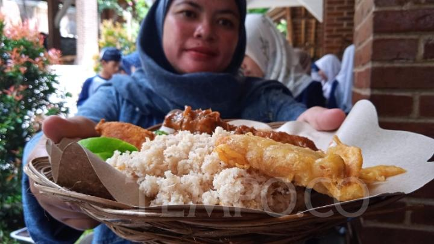

Masyarakat Kampung Adat Cirendeu mempertahankan beras singkong
yang disingkat rasi sebagai makanan pokok sejak 1924 atau hampir
seabad lamanya. Warga luar atau pengunjung bisa ikut mencicipi
rasa dan bentuknya yang unik. “Rasi gorengnya enak dengan bumbu
racikan,” kata Siti Nina Hermina, Selasa 21 November 2023.
Menu favoritnya itu kata Nina, biasanya disuguhkan warga pada
Minggu pagi. Selewat jam 10.00 pengunjung bisa tidak kebagian.
Pada hari libur itu suka banyak tamu yang mampir, juga rombongan
yang melakukan olahraga di tempat lain. Dia sendiri mengaku sering
membawa ibu-ibu tetangganya ke sana. Selain rasi ada juga olahan
makanan lain yang berbahan singkong.
Kampung Adat Cirendeu berlokasi di daerah Leuwigajah, Kota Cimahi.
Nina biasa membeli bahan rasi dari warga, pun yang sudah dimasak
untuk dibawa pulang ke rumah. “Kalau mau beli enggak bisa mendadak
harus pesan dulu,” katanya. Rasi dimakan sebagai pengganti nasi
beras dari padi. Adapun lauk pauknya bisa menggunakan menu biasa
seperti tahu, tempe, daging ayam, sayur, lalap, dan sambal.
Selain
itu pada hari kerja lainnya, Kampung Adat Cirendeu juga ramai oleh
kunjungan rombongan pelajar sekolah. Warga mengenalkan rasi dan
cara pembuatannya, juga mengajak mereka mendaki ke Puncak Salam.
Acara lainnya seperti berkreasi dengan menggunakan janur atau daun
kelapa.

Menurut sesepuh Kampung Adat Cirendeu Abah Widi, pengunjung mulai
ramai sejak 2010. Mereka tidak hanya datang dari daerah sekitar
tapi juga dari luar provinsi dan mancanegara. Selain tertarik oleh
budaya makan rasi dan terkait isu ketahanan pangan global,
peneliti juga berdatangan untuk mengetahui soal singkong dan
kondisi lahannya serta kesehatan warga pemakan rasi.
Saat ini kata Abah Widi, jumlah warga Kampung Adat Cirendeu
sebanyak 60 keluarga. Mereka menganut aliran kepercayaan Sunda
Wiwitan. Namun begitu mereka tetap mengikuti perkembangan zaman
dari misalnya cara berpakaian, bentuk rumah, dan perabotnya,
seperti warga lain yang hidup bertetangga.
Secara umum
tidak ada ciri khas yang mencolok dalam hidup keseharian warga
Kampung Adat Cirendeu. Adapun upacara adat digelar sesuai
kebutuhan, misalnya ritual tanam singkong, panen, kemudian pada
1,10, dan 30 Sura yang waktunya berpatokan pada kalender Sunda.
Selain itu ada ritual kelahiran dan keselamatan bayi, kematian,
dan pernikahan.